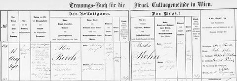

Alois Reich
1874–1932
Life events
| Born | 4 Jun 1874 |
|---|---|
| Married | 18 Aug 1901 · Berta Kohn · Leopoldstädter Tempel, 1020 Tempelgasse 5, Vienna, Austria Map |
| Died | |
| Buried | 3 Apr 1932 · Zentralfriedhof Tor IV, 1110 Simmeringer Hauptstrasse 246, Vienna, Austria Map · Group 8, Row 15, Grave 22 |
Family
Alois Reich1874–1932

Berta Kohn1874–1942
Photos
Berta Kohn
Alois Reich